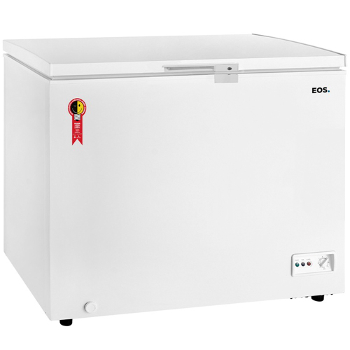

Gazin Atacado
A Gazin Atacado, foi criado no ano de 1996, e atualmente, é um dos principais negóciosda empresa, o Atacado da Gazin é conhecido como uma das maiores Atacadistas do Brasil. O setor de televendas na
cidade de Douradina-PR, atende vários lojistas do pais inteiro, recebendo suas mercadorias sempre com agilidade, pontualidade
e o principal de tudo qualidade, que é o principal objetivo da emrpresa, sempre buscando o melhor para o cliente
O Gazin Atacado tem 14 Centros de Distribuição pelo Brasil. Esse setor da emrpresa está em constante evolução, sempre
evulindo ano após ano. A empresa vem investindo em programas de Acompanhamento e suporte aos lojistas, sempre
inovando na variedade de produtos, esses são alguns dos segredos para o suceso.
Treinamentos
desses treinamentos são melhorar a parte técnica e a gestão de negócios e equipes. A intenção de realizar treinamentos, é sempre
desenvolver cada cada vez mais e buscar o melhor dos funcionários que realizam esse treinamento, para que eles consigam ter o melhor
desempenho possível em seus respectivos cargos. Por isso o Gazin Atacado é reconhecido no pais inteiro, pois
por conta desses treinamentos, os funcionários conseguem desempenhar o seu papel da melhor maneira possível, e claro, sempre
buscando o melhor negócio para o clinte.


Uma das maiores Atacadistas do Brasil
A Gazin Atacado, consegue se destacar como uma das maiores e melhores atacadista
do Brasil, sempre oferecendo uma grande variadade de seviços e produtos para
atender todas às suas necessidades.
Desde a sua fundação, o principal objetivo é ser o melhor parceiro para o se negócio.
Atuando como revendedor, você pode contar com a Gazin Atacado para que eles forneçam
produtos de qualidade alta, uma distribução muito eficaz e uma parceria que pode te
ajudar a alcançar todos seus objetivos e metas comercias.
A Gazin Atacado possui 14 Centros de Distribuição posicionados em todo o pais.
Ou seja, isso garante que suas mercadorias sejam entregues o mais rapido possível, sempre
com pontualidade, e também a empresa tem uma ampla frota própria, que garante a entrega
de forma rápida de todos os produtos em todo o Brasil.
Uma das grandes vantagens da Gazin Atacado é a diversidade de produtos que são oferecidos, que
variam de produtos de informática até móveis e eletrodomesticos, uma grande linhade produtos
para poder atender as necessidades do seu negócio.
Esses são apenas alguns exemplos
de produtos vendidos na Gazin Atacado
| Produto | |
|---|---|
 |
REF 334L CONSUL 2P CLASSE A |
| Marca | CONSUL |
| Modelo | CRD37EB |
| Capacitade Total |
334 litros |
| Freezer | Sim |
| Tipo de degelo | Cycle defrost |
| Produto | |
|---|---|
 |
LAV 14 KG ELECTROLUX ESSENCIAL CARE CESTO INOX |
| Marca | Electrolux |
| Modelo | LED14 |
| Programas | 11 progrmas |
| Material do Cesto |
Inox |
| Display | Digital |
| Visualizador de etapas de lavagem |
Sim |
| Abertura da tampa | Superior |
| Produto | |
|---|---|
 |
ESPREMEDOR MONDIAL FRUTAS TURBO CITRUS |
| Marca | Mondial |
| Modelo | Turbo Citrus E-01 |
| Tipo | Espremedor de frutas |
| Capacidade | 1,2 litros |
| Velocidades | 1 velocidades |
| Acionamento automático | Por pressão |
| Portas-fios | Sim |
| Produto | |
|---|---|
 |
FERRO B&D AUTOMATICO SECO VFA1110 PRETO |
| Marca | Black & Decker |
| Modelo | VFA1110 |
| Tipo | Ferro a seco |
| Base | Alumínio polido |
| Seletor de temperatura |
Sim |
| Reservatório de água |
Não |
| Autolimpante | Não |
| Indicador de nível de água |
Não |
| Produto | |
|---|---|
 |
Celular Samsung Galaxy A05 128GB SM-A055M/DS |
| Marca | Samsung |
| Modelo | SM-A055M |
| Linha | A |
| Série | A05 |
| Tamanho da tela |
6.7" |
| Tecnologia da tela |
PLS LCD |
| Resolução da tela |
720 x 1600 |
| Sistema operacional |
Android 12 |
| Processador | Octa core |
| Produto | |
|---|---|
 |
FOGAO 5B ELECTROLUX COM ACENDIMENTO |
| Marca | Electrolux |
| Modelo | FE5IB |
| Tipo | Fogão de piso |
| Quantidade de bocas |
5 bocas |
| Acendimento | Automático |
| Material da mesa |
Aço inox |
| Tipo de queimadores |
Tripla chama |
| Material das trempes |
Arame cilíndrico |
| Produto | |
|---|---|
|  | FREEZER 192L EOS HORIZONTAL 01 TAMPA - EFH250X |
| Marca | EOS |
| Modelo | Eco Gelo EFH250X-B15916 |
| Capacidade Líquida | 192 litros |
| Tipo de degelo |
Manual |
| Tipo de freezer |
Horizontal |
| Modos | Congelador e refrigerador |
| Painel | Externo |
| Quantidade de portas |
1 porta |
| Controle de temperatura |
Sim |
| Produto | |
|---|---|
 |
CAIXA DE SOM GO + PLAY 3 HARMAN KARDON 160W |
| Marca | Harman |
| Modelo | Go+ Play 3 |
| Tipo | Portátil |
| Potência | RMS: 160W |
| Display de controle |
Sim |
| Bluetooth | Sim |
| Entradas | USB tipo C |
| Resistência a água |
Não |
| Rádio AM/FM | Não |